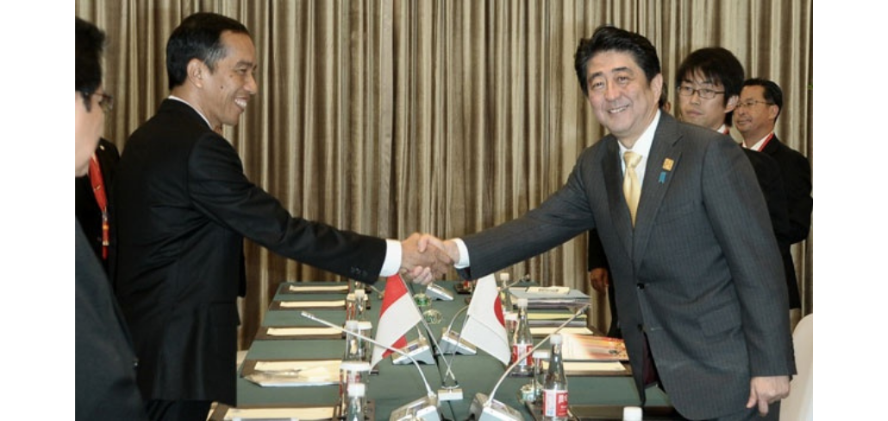
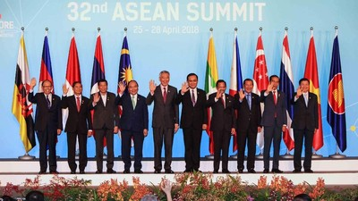
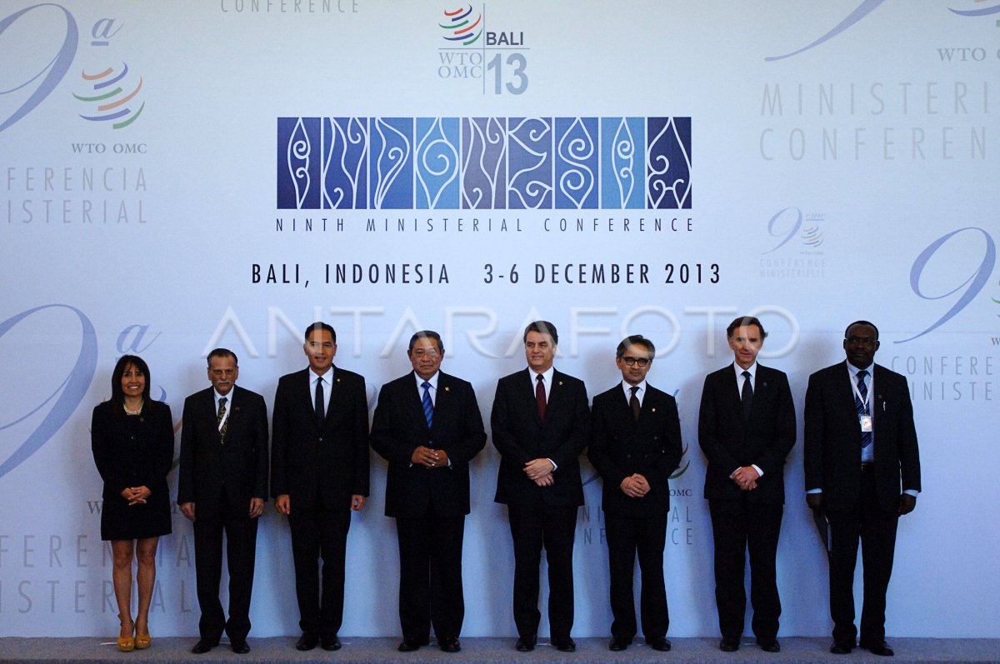
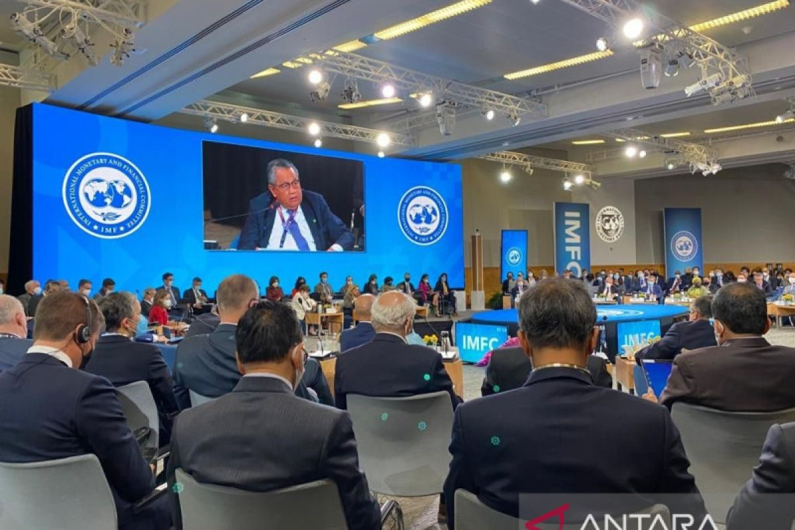
 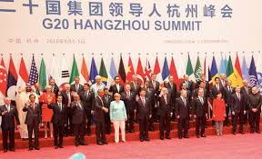
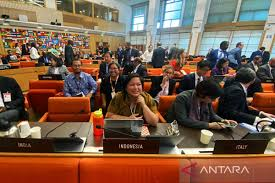
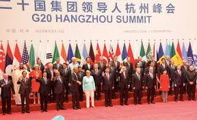
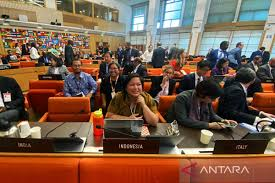
 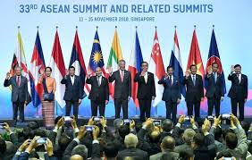
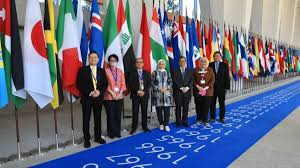
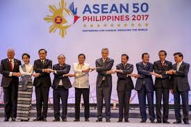
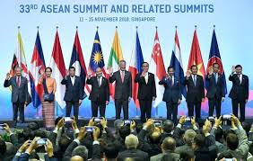
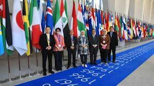
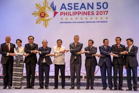
Kerja sama bilateral bukan lagi hal baru untuk Indonesia seringkali dilakukan kerja sama dalam banyak sekali bidang demi kebaikan negara kita. Contohnya adalah program pertukaran pelajar yang dilakukan khususnya dengan negara malaysia, melalui kegiatan ini, para pelajar dapat meningkatkan penguasaan bahasa asing dan memperdalam ilmu yang ingin mereka pelajari. Indonesia berperan dalam mengirimkan pelajar ke Malaysia dan sebaliknya Indonesia akan menerima pelajar dari Malaysia.
Ada juga peran Indonesia dalam kerja sama bilateral bidang ekonomi, contohnya adalah IJEPA dimana Indonesia berperan dalam mengekspor jasa bisnis kepada negara Jepang, selain itu Indonesia juga mengirimkan sebanyak 622 tenaga perawat dan 1.494 tenaga perawat lansia bagi negara Jepang. Tentunya selain memberikan sumber daya tersebut kepada Jepang, Indonesia juga mendapatkan impor jasa rekreasi budaya dari Jepang serta penanaman banyak investasi di negara kita.
Selain kerja sama bilateral dalam bidang pendidikan dengan negara Malaysia, Indonesia juga memiliki kerja sama yang lain dengan negara Malaysia yaitu dalam bidang keamanan. Indonesia dan Malaysia mengadakan latihan gabungan militer dengan tujuan keamanan perbatasan masing - masing negara. Setelah Itu Indonesia dan Malaysia bekerja sama untuk membuat satelit mikro yang ditujukan untuk memantau kondisi dari masing - masing negara.
Selain dalam kerja sama bilateral Indonesia juga memiliki peran yang besar dalam kerja sama regional. Contoh yang paling umum adalah ASEAN, pada kerja sama ASEAN, Indonesia sangat aktif dalam mempromosikan kerjasama budaya di kawasan ASEAN seperti mengadakan festival budaya untuk memperlihatkan budaya - budaya dari berbagai negara di kawasan Asia Tenggara. Selain itu Indonesia juga sangat berperan dalam perlindungan keragaman budaya Asia Tenggara, Indonesia seringkali mempromosikan toleransi antara budaya yang berbeda, mendorong para masyarakat untuk saling menghargai perbedaan budaya dan membangun rasa hormat kepada sesama yang tinggi.
Selain ASEAN, Indonesia juga memiliki peran dalam APEC yaitu menjadi tuan rumah pertemuan APEC pada tahun 1994 dan 2013 yang lalu. Selain menjadi tuan rumah penyelenggaraan pertemuan tersebut Indonesia juga aktif berperan dalam mempromosikan pembangunan ekonomi di wilayah Indonesia maik melalui kerja sama perdagangan maupun dalam bentuk investasi.
Dalam EU atau Uni Eropa Indonesia memiliki banyak perananan seperti mendorong pembangunan ekonomi yang inklusif, mempromosikan tata pemerintahan yang baik, melindungi lingkungan negara, melawan dampak perubahan iklim yang semakin hari semakin memburuk, mendukung masyarakat sipil, dan yang pastinya mempromosikan pendidikan dasar bagi rakyatnya yang belum mampu.
Indonesia memiliki peran yang sangat besar dalam pembentukkan AFTA, Indonesia merupakan pelopor dari pembentukannya AFTA pada tahun 1992, membuka gerbang bagi liberalisasi perdagangan dan investasi - investasi di kawasan ASEAN ( Asia Tenggara ). Dengan melakukan hal ini, Indonesia membantu mendorong pergerakan barang, jasa, modal, bahkan tenaga kerja yang lebih bebas dan efisien.
Peranan Indonesia dalam kerja sama multilateral juga bukan sedikit contoh termudahnya adalah WTO. Pada WTO Indonesia membantu merundingkan pembangunan - pembangunan yang akan dilangsungkan di Doha, posisi Indonesia adalah untuk berfokus pada kepentingan nasional guna untuk mendorong pengentasan kemiskinan serta perubahan ekonomi.
Peran Indonesia dalam ILO adalah untuk memberikan sumbangan pemikiran dan tindakan untuk mengatasi masalah perburuhan di dunia. Selain itu Indonesia juga sedang berusaha untuk bekerja sama dengan ILO untuk melindungi para pekerja perempuan dengan cara penyesuaian terhadap standar - standar internasional dan pelaksanaan program bersama, namun sayangnya kerja sama yang dilakukan belum efektif karena belum memenuhi keempat indikator dan konsep Decent Work.
Yang terakhir yaitu peran Indonesia dalam FAO. Dalam Fao, Indonesia memiliki peran penting yaitu untuk mengarahkan kebijakan dan perkembangan sistem pangan secara global. Di saat yang bersamaan Indonesia juga perlu mencontohkan kemampuannya dalam meningkatkan ketahanan pangan, termasuk melalui dukungan untuk perdagangan pangan secara global.